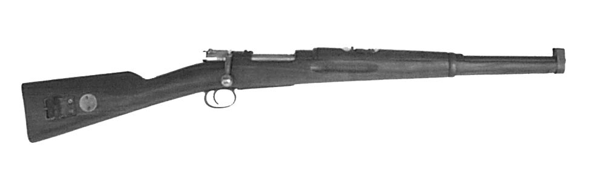

Karbin m/94

Konstruktör: Peter-Paul Mauser, Tyskland
Tillverkare: bl a Carl Gustafs Stads Gevärsfaktor, Eskilstuna
System: 5-skotts repetergevär med mausermekanism
Kaliber: 6,5 mm
Längd: 950 mm
Vikt: 3,4 kg (oladdat)
Riktmedel: Korn och ramtrappsikte för 300 - 1600 m
Magasin: 5-skotts fast magasin i stocken
Eldhastighet: ca 6 skott/minut (praktik eldhastighet)
Ammunition: 6,5 mm ptr m/94 och senare även 6,5 mm ptr m/41
.
.
.
.
.